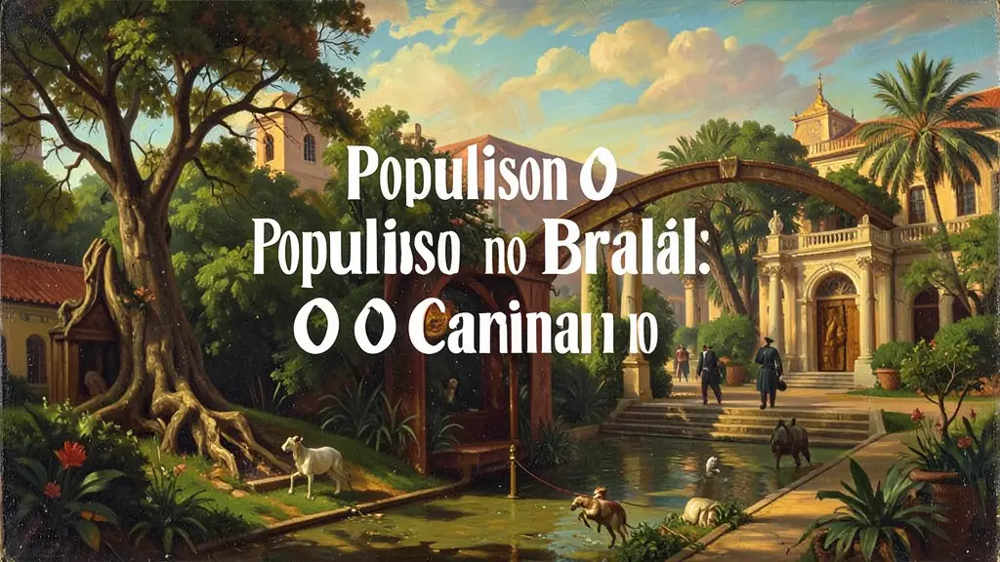
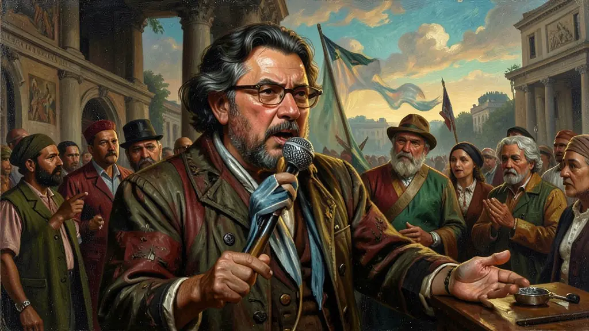
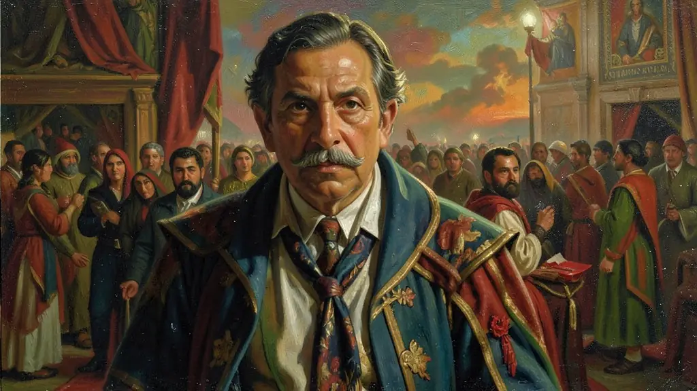

Capítulo 01
1. A Massa Urbana: O Novo Ator Político
Até 1930, o Brasil era rural. Com as fábricas, surgiram os operários. Eles não tinham patrões coronéis, então precisavam de um novo tipo de herói. Os líderes populistas entenderam que, para governar, era preciso conquistar o coração de quem vivia nos cortiços e nas favelas, dando-lhes a sensação de pertencimento à nação brasileira por meio do trabalho e do consumo.

Capítulo 02
2. O Rádio: O Microfone do 'Pai'
Sem o rádio, o populismo não existiria. Vargas entrava na casa de todos com o 'Trabalhadores do Brasil!'. A tecnologia permitiu que a voz do líder chegasse aos lugares mais distantes, criando o mito de que o presidente conhecia o sofrimento de cada brasileiro. O rádio transformou o político em uma celebridade, em um membro íntimo da família brasileira.

Capítulo 03
3. Paternalismo e CLT: O Estado Protetor
No populismo, os direitos não são conquistados pela luta de classes, mas 'dados' pelo Estado bondoso. Vargas criou a carteira de trabalho para que o operário se sentisse um 'filho' do governo. Isso impedia que os sindicatos se tornassem revolucionários socialistas. O Estado era o mediador que acalmava o rico e protegia o pobre, mantendo a ordem capitalista intacta.

Capítulo 04
4. Adhemar de Barros: 'Rouba mas Faz'
A face mais pragmática do populismo foi o 'Adhemarismo' em São Paulo. Ele prometia obras faraônicas e hospitais, ignorando as acusações de corrupção. O povo aceitava o desvio de verba desde que as pontes e escolas fossem construídas. Esse estilo 'pragmático' de populismo sobrevive até hoje na política brasileira, onde a eficiência da obra justifica qualquer crime ético.
Capítulo 05
5. O Fim da Harmonia: A Crise do Modelo
O populismo funcionava bem enquanto o país crescia e havia dinheiro para distribuir. Quando a inflação subiu nos anos 60 e Jango começou a falar em tirar terras dos ricos para dar aos pobres (Reformas de Base), a elite rompeu com o modelo. O populismo de conciliação morreu quando os interesses de patrão e empregado ficaram irreconciliáveis. O golpe de 64 foi o enterro dessa política de carisma e massas.
O conceito de 'populismo' no Brasil refere-se prioritariamente ao período entre 1945 e 1964, quando líderes políticos estabeleceram uma relação direta com as massas urbanas, ignorando as mediações institucionais tradicionais. Segundo Francisco Weffort, o populismo brasileiro surgiu do vazio de poder após 1930, onde o Estado atuava como 'árbitro' entre a burguesia industrial e a classe operária emergente. Figuras como Getúlio Vargas e Adhemar de Barros personificaram essa liderança carismática que concedia direitos reais aos trabalhadores em troca de lealdade política.
Essa fase foi caracterizada pelo nacional-desenvolvimentismo e pela valorização da soberania nacional. O populismo não era apenas um estilo de governo, mas um pacto social onde o trabalhador era reconhecido como cidadão desde que não desafiasse as estruturas básicas do capitalismo industrial. No entanto, o populismo entrou em crise na década de 1960, quando a radicalização política das massas (Reformas de Base) e a oposição das elites econômicas levaram ao colapso do sistema e ao subsequente golpe militar de 1964.
Para o Enem, é crucial distinguir o 'populismo' como uma categoria analítica da ciência política e não como um simples xingamento. É preciso compreender que esse modelo garantiu, pela primeira vez no Brasil, a inclusão das massas no jogo político formal, embora de forma controlada. O estudo deste tema permite analisar como a industrialização e a urbanização mudaram a cara da política nacional, criando uma linguagem baseada no trabalhismo e no nacionalismo que ressoa até os dias atuais.
Fonte: WEFFORT, Francisco. O Populismo na Política Brasileira. Rio de Janeiro: Paz e Terra, 2003.
Atividades interativas
Questões para fixar
A política populista no Brasil, especialmente durante o governo de Getúlio Vargas, caracterizava-se por qual tipo de relação entre o líder e as massas?
O lema 'Rouba mas Faz', atribuído a políticos como Adhemar de Barros, sintetiza qual característica comum a certos regimes populistas?
Qual foi o principal fator que contribuiu para o surgimento do populismo no Brasil?
Qual das seguintes características é uma das principais do populismo brasileiro?
Qual foi o resultado da tentativa de reformas radicais de Jango?